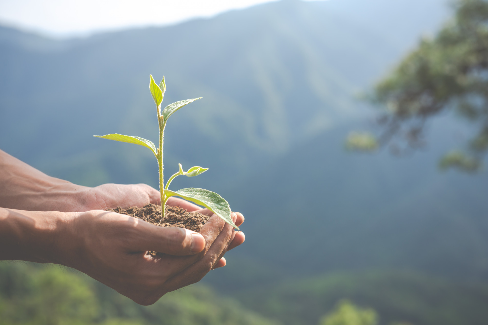

Conservación del medio ambiente
El cuidado del medio ambiente es más que una necesidad, es una responsabilidad compartida. Cada acción, por más pequeña que parezca, tiene un impacto directo en la salud de nuestro planeta. Desde reducir el uso de plásticos hasta el ahorro de energía y agua, cada paso cuenta. Reciclar, optar por transporte sostenible y elegir productos responsables son decisiones que protegen nuestros recursos naturales y mejoran nuestra calidad de vida.
¿Por qué es importante?
La conservación del medio ambiente es fundamental para garantizar la supervivencia de todas las especies. El cambio climático, la deforestación y la contaminación son amenazas que afectan nuestra salud, economía y calidad de vida. La reducción de emisiones y la transición hacia energías renovables son pasos cruciales para combatir estos problemas.
Consejos para cuidar el medio ambiente
- Reduce el consumo de plásticos: Utiliza bolsas reutilizables y evita productos con exceso de embalaje.
- Ahorra agua y energía: Repara fugas y apaga los aparatos cuando no los uses.
- Utiliza transporte sostenible: Opta por transporte público o bicicleta cuando sea posible.
- Recicla correctamente: Aprende a clasificar los residuos adecuadamente.